Lab 2 – Static Routes: Basic Connectivity
| Networking | |
| Laboratory 2 – Static Routing (Short Version) This lab teaches how to connect different networks in Cisco Packet Tracer using static routes. What you will learn: • What static routing is and how it works. • How to use ip route to tell routers exactly where to send traffic. • How to test connections with ping and traceroute. • How to fix routing problems caused by wrong settings. • How to link multiple subnets so they can communicate. After the lab you can: • Explain when static routing is useful. • Add and check static routes on Cisco routers. • Solve simple routing and connectivity issues. • Build small network topologies where all devices can reach each other. Who it's for: Beginners and students who want practical experience with basic IP routing in Packet Tracer. |
OBJECTIVE:
Lab practice on Static Routes and ensuring end-to-end connectivity
- Connect the devices (cabling)
- Assign IP addresses to Routers, Switches, and PCs
- GREEN network:
RED1-BLUE1: 89.12.0.0/24
RED1-YELLOW1: 89.13.0.0/24
YELLOW1-BLUE1: 89.32.0.0/24
- RED network: 172.16.0.0/24
- BLUE network: 192.168.0.0/24
- YELLOW network: 10.8.8.0/24
- DNS Server IP: 10.8.8.8
- HTTP Server IP: 10.8.8.9
- Router YELLOW1 IP: 10.8.8.1
- Set Hostnames, Enable passwords, and login banners
- Configure Telnet on the BLUE1 Router
- Configure SSH on the YELLOW1 and RED1 Routers
- Set Static Routes between the networks
- Access the following websites from the browser on each PC:
Network Topology Overview
- GREEN network:
RED1-BLUE1: 89.12.0.0/24
RED1-YELLOW1: 89.13.0.0/24
YELLOW1-BLUE1: 89.32.0.0/24
- RED network: 172.16.0.0/24
- BLUE network: 192.168.0.0/24
- YELLOW network: 10.8.8.0/24
- DNS Server IP: 10.8.8.8
- HTTP Server IP: 10.8.8.9
- Router YELLOW1 IP: 10.8.8.1
The network is divided into four broadcast domains, connected through routers.

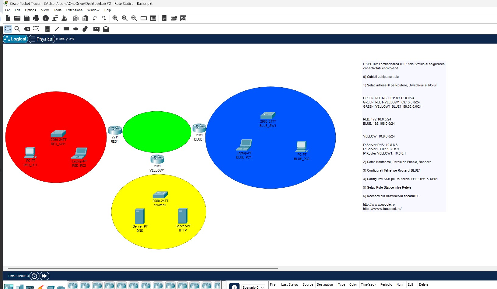
Step-by-Step Configuration
Step 1: Cabling
I connected all PCs, laptops, switches, and routers by using appropriate cables.

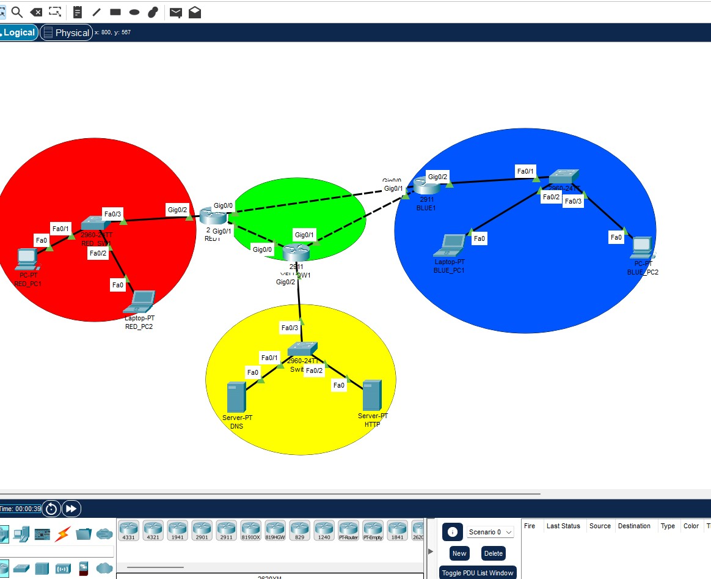
Step 2 : IP address assignment and devices configuration
Configured IP addressing on all devices based on the provided addressing scheme.
I assigned hostnames to all routers to facilitate device identification. and enabled passwords and login banners to provide security notices upon access.

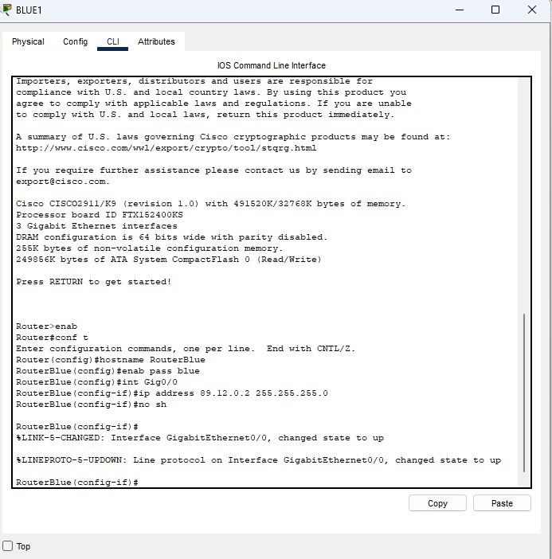
Router configuration ex: hostname, password and IP address

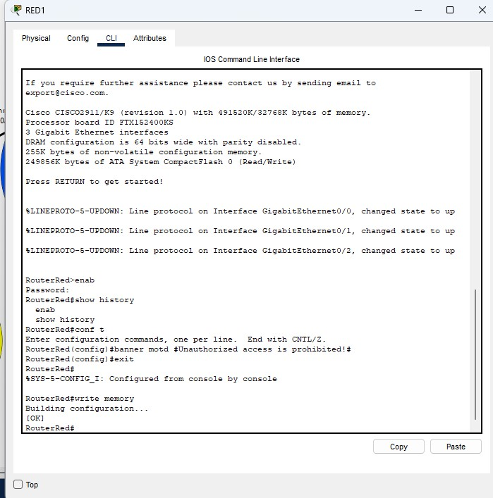
Router configuration banner
Step 3 :Configuration of TELNET on Blue Router and SSH on Yellow and Red Routers
Telnet and SSH are network protocols used to remotely access and manage devices, such as routers, switches, or servers, over a network.

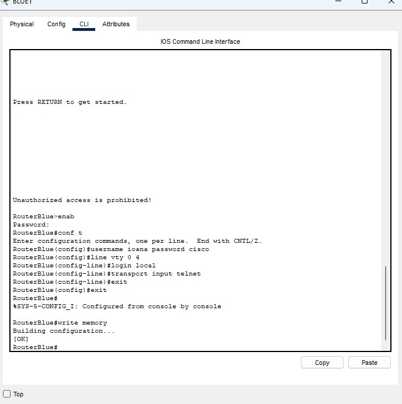
Telnet configuration on Blue Router

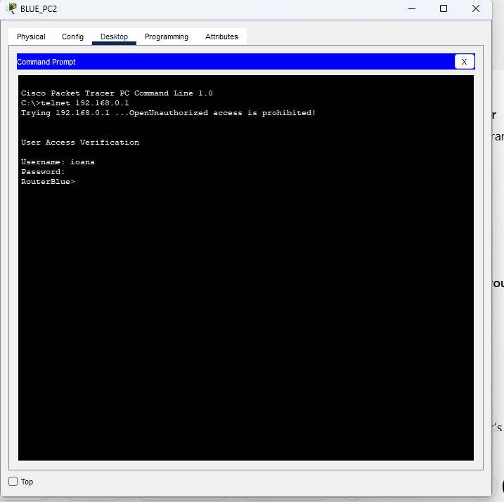
Testing Telnet connectivity

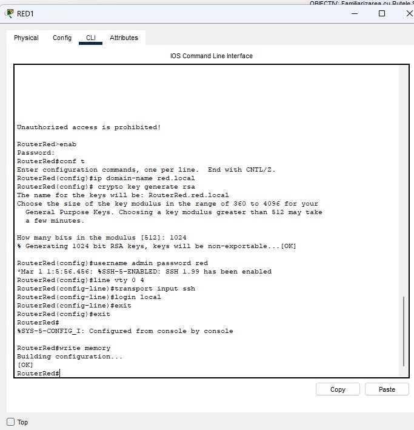
SSH configuration on Red Router

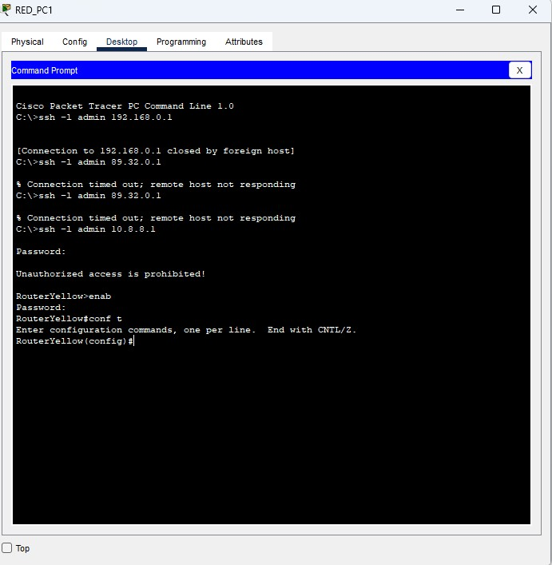
Testing SSH connectivity from Red LAN to Yellow LAN

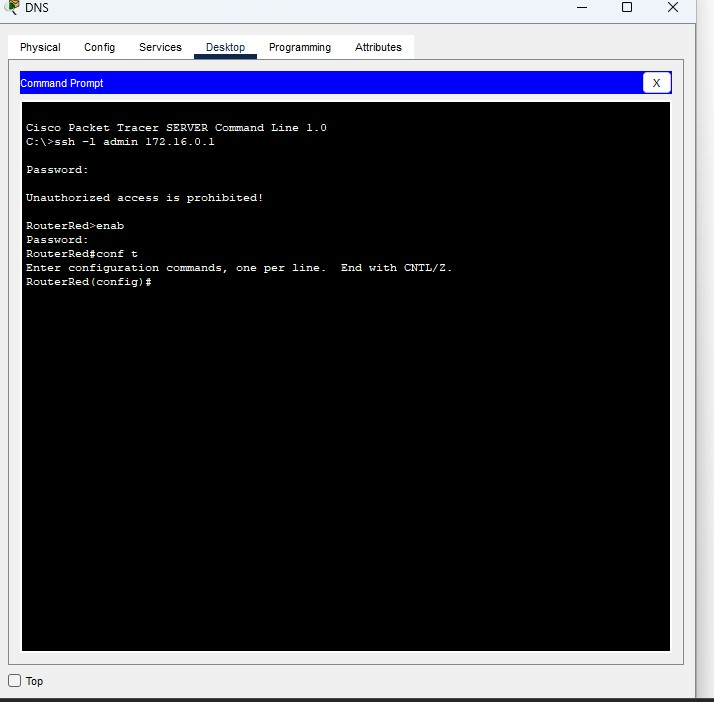
Testing SSH connectivity from Yellow LAN to Red LAN
Step 4: Static Routing configuration
Static routing is the process of manually adding IP routes to a router so it knows how to reach specific networks.

IP Route configuration example on the Red Router
Step 5: Testing connectivity
In this step I used the web browser tool on a PC to test application-layer connectivity.

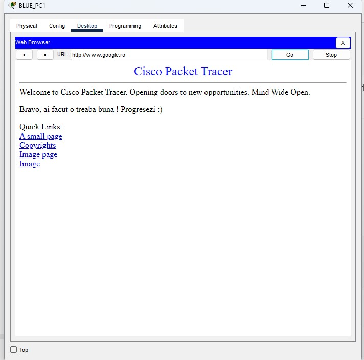
Blue PC connectivity

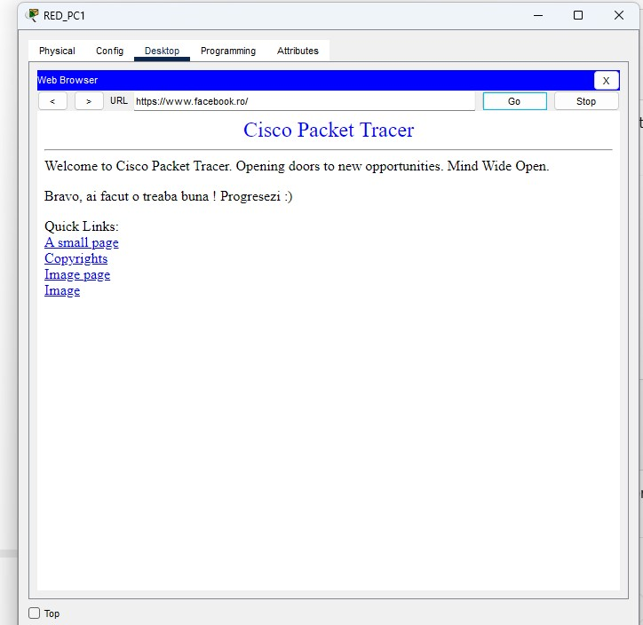
Red PC connectivity
In this lab, I successfully configured static routing to facilitate communication across multiple networks. I validated remote management capabilities by testing both Telnet and SSH access to the routers. Finally, I confirmed end-to-end connectivity by accessing web servers from each PC, demonstrating full network integration and functionality.
To review or simulate the network, download the attached .pkt file and open it using Cisco Packet Tracer software.